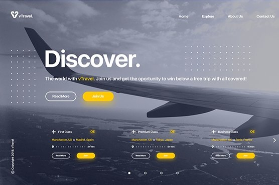
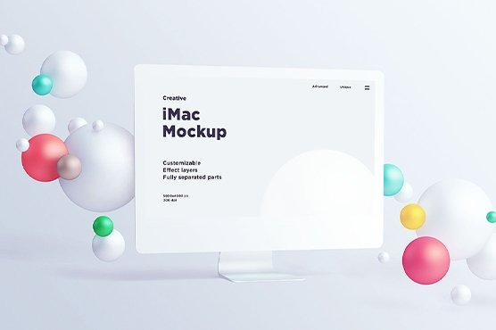
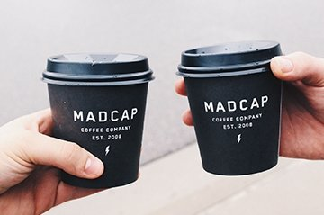

<!-- Секция "Портфолио" -->
<section class="portfolio">
  <div class="container">
    <h2>Портфолио</h2>
    <div class="portfolio-nav-bar">
      <button class="control-active" data-filter="all">Все работы</button>
      <button data-filter=".boots">Bootstrap</button>
      <button data-filter=".wp">WordPress</button>
      <button data-filter=".frontend">Frontend</button>
    </div>

    <div id="portfolio-projects" class="all-cards">
      <!-- Верхний ряд с двумя большими карточками -->
      <!-- <div class="big-card-row"> -->
      <!-- Левая большая карточка -->
      <div class="big-portfolio-card mix boots frontend">
        <div class="big-img-wrapper">
          
        </div>

        <h2>Верстка “Форест тревел”</h2>
        <p>Вёрстка многостраничного сайта</p>
      </div>
      <!-- // Левая большая карточка -->

      <!-- Правая большая карточка -->
      <div class="big-portfolio-card mix boots all frontend">
        <div class="big-img-wrapper">
          
        </div>

        <h2>Сайт для коворкинга “Мечта”</h2>
        <p>Вёрстка лендинга</p>
      </div>
      <!-- // Правая большая карточка -->
      <!-- </div> -->
      <!-- //  Верхний ряд с двумя большими карточками -->

      <!-- Нижний ряд с тремя маленькими карточками -->
      <!-- <div class="mini-card-row"> -->
      <!-- Левая карточка -->
      <div class="mini-portfolio-card mix wp all frontend">
        <div class="mini-img-wrapper">
          
        </div>

        <h2>Верстка “Мир Авто”</h2>
        <p>Вёрстка многостраничного сайта</p>
      </div>
      <!-- // Левая карточка -->

      <!-- Средняя карточка -->
      <div class="mini-portfolio-card mix wp all frontend">
        <div class="mini-img-wrapper">
          
        </div>

        <h2>Верстка “Мир Авто”</h2>
        <p>Вёрстка многостраничного сайта</p>
      </div>
      <!-- // Средняя карточка -->

      <!-- Правая карточка -->
      <div class="mini-portfolio-card mix wp all frontend">
        <div class="mini-img-wrapper">
          
        </div>

        <h2>Верстка “Мир Авто”</h2>
        <p>Вёрстка многостраничного сайта</p>
      </div>
      <!-- // Правая карточка -->
      <!-- </div> -->
    </div>

    <!-- // Нижний ряд с тремя маленькими карточками -->
  </div>
</section>
<!-- // Секция "Портфолио" -->
